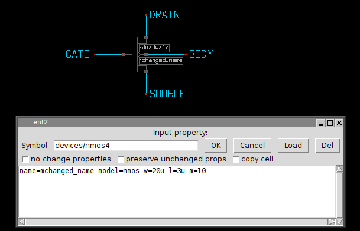
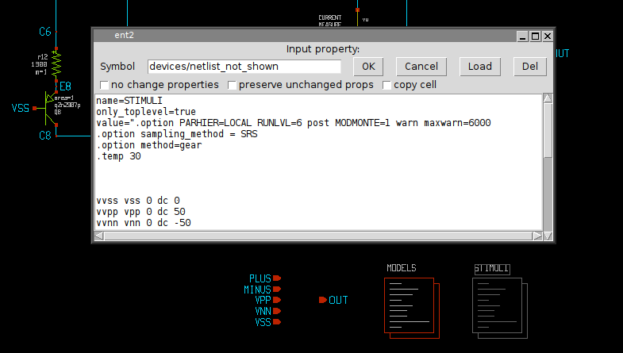
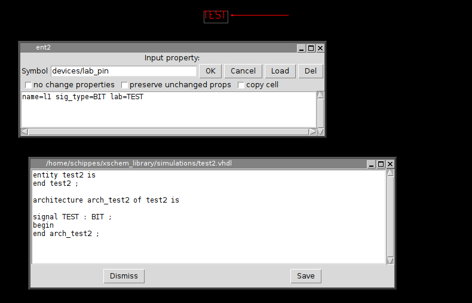
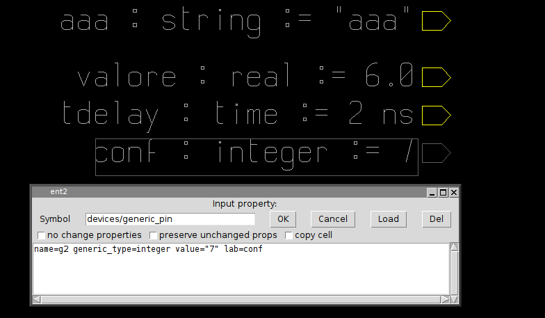

COMPONENT PROPERTY SYNTAX
Component property strings can be set in the usual way with the 'q' on a selected component instance or by menu Properties --> Edit
The dialog box allows to change the property string as well as the symbol reference. The property string is essentially a list of attribute=value items. As with symbol properties if a value has white space it should be double-quoted. The following property definitions are identical:
name=mchanged_name model=nmos w=20u l=3u m=10
name="mchanged_name" model="nmos" w="20u" l="3u" m="10"
Given the role of the " character, if quoted values are needed escapes must be used, like in the following example where the model name will be with quotes in netlist:
name="mchanged_name" model="\"nmos\"" w="20u" l="3u" m="10"
or
name="mchanged_name" model=\"nmos\" w="20u" l="3u" m="10"
the resulting SPICE netlist will be:
mchanged_name DRAIN GATE SOURCE BODY "nmos" w=20u l=3u m=10
There is no limit on the number of attribute=value items, each attribute should have a corresponding @attribute in the symbol definition format, but this is not a requirement. There are a number of special attributes as we will see later.
Important: a name=<inst_name> item is mandatory and must be placed before any other attributes in component property string. The name attribute is used by XSCHEM -among other things- for fast indexing the component. If <inst_name> is already used in another component XSCHEM will auto-rename it to a unique name preserving the first letter (which ts a device type indicator for SPICE like netlists).
PREDEFINED COMPONENT ATTRIBUTES
- name
- url
- program
- only_toplevel
- place
- spice_ignore
- verilog_ignore
- vhdl_ignore
- sig_type
- verilog_type
- generic_type
- class
This defines the name of the instance. Must be the first attribute=value in the component property string. Names are unique, so if for example multiple MOS components are placed in the design one should be named m1 and the second m2 or anything else, provided the names are different. XSCHEM enforces this, if a name is given that already exist in the current schematic it will be renamed. Normally the template string defines a default name for a given component, and expecially for SPICE compatibility, the first character must NOT be changed. For example, the default name for a MOS transistor is m1, it can be renamed for example to mcurr_source but not for example to dcurr_source. XSCHEM does not enforce that the first character is preserved, it's up to the designer to keep it consistent with the component type.
This attribute defines a location (web page, file) that can be viewed when hitting the <shift>H key on a selected component. This is very useful to link a datasheet to a component, for example. The default program used to open the url is x-www-browser. this can be changed in the ~/.xschem configuration file. url can be an http link or a local file.
this attribute can be used to specify an application to be used to open the url link. for example program=evince may be given to specify an application for a pdf file specified with url
this attribute is valid only on netlist_commands type symbols and specifies that the symbol should be netlisted only if it is instantiated in the top-most hierarchy. This is very usefull for spice commands. Spice commands are placed in a special netlist component as we will see and are meaningfull only when simulating the block, but should be skipped if the component is simulated as part of a bigger system which has its own (at higher hierarchy level) netlistcomponent for Spice commands.
This attribute is also valid only for netlist_commands type symbols, and tells XSCHEM that this component must be netlisted last. This is necessary for some spice commands that need to be placed after the rest of the netlist.
This tells XSCHEM that for SPICE netlist this component will be completely ignored.
This tells XSCHEM that for Verilog netlist this component will be completely ignored.
This tells XSCHEM that for VHDL netlist this component will be completely ignored.
For verilog type netlist, this tells that the current label names a signal (or constant) of type sig_type. For example a label can be placed with name TEST and sig_type=BIT. The default type for VHDL if this property is missing is std_logic. The following picture shows the usage of sig_type and the resulting VHDL netlist. This property is applicable only to label type components: ipin.sym, iopin.sym, opin.sym, lab_pin.sym, lab_wire.sym.
This is the same as sig_type but for verilog netlisting: can be used to declare a wire or a reg or any other datatype supported by the verilog language.
generic_type defines the type of parameters passed to VHDL components. Consider the following examples of placement of generic_pin components in a VHDL design:
As you will see in the parameters slide, generics (they are just parameters passed to components) can be passed also via property strings in addition to using generic_pin components.
The class attribute is used to declare the class of a VHDL signal, most used classes are signal and constant. Default if missing is signal.